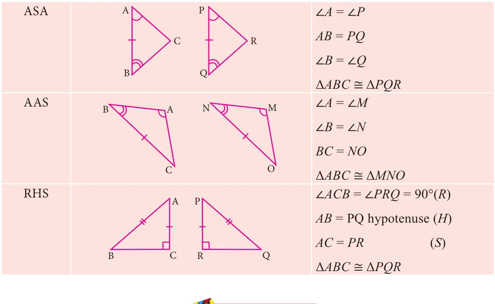

4.2 Types of Angles-Recall

Plumbers measure the angle between connecting pipes to make a good fitting. Wood workers adjust their saw blades to cut wood at the correct angle. Air Traffic Controllers (ATC) use angles to direct planes. Carom and billiards players must know their angles to plan their shots. An angle is formed by two rays that share a common end point provided that the two rays are non-collinear.

Complementary Angles

Two angles are Complementary if their sum is \(90^{\circ}\). For example, if \(\angle ABC=64^{\circ}\) and \(\angle DEF=26^{\circ}\), then angles \(\angle ABC\) and \(\angle DEF\) are complementary to each other because \(\angle ABC + \angle DEF = 90^{\circ}\)
Supplementary Angles

Two angles are Supplementary if their sum is \(180^{\circ}\). For example if \(\angle ABC=110^{\circ}\) and \(\angle XYZ=70^{\circ}\)
Here \(\angle ABC + \angle XYZ = 180^{\circ}\)
\(\therefore \angle ABC\) and \(\angle XYZ\) are supplementary to each other
Adjacent Angles

Two angles are called adjacent angles if
- They have a common vertex.
- They have a common arm.
- The common arm lies between the two non-common arms.
Linear Pair of Angles
If a ray stands on a straight line then the sum of two adjacent angle is \(180^{\circ}\). We then say that the angles so formed is a linear pair.

\(\angle AOC + \angle BOC = 180^{\circ}\)
\(\therefore \angle AOC\) and \(\angle BOC\) form a linear pair
\(\angle XOZ + \angle YOZ = 180^{\circ}\)
\(\angle XOZ\) and \(\angle YOZ\) form a linear pair
Vertically Opposite Angles

If two lines intersect each other, then vertically opposite angles are equal.
In this figure
\(\angle POQ = \angle SOR\)
\(\angle POS = \angle QOR\)
4.2.1 Transversal
A line which intersects two or more lines at distinct points is called a transversal of those lines.
Case (i) When a transversal intersect two lines, we get eight angles.

In the figure the line \(l\) is the transversal for the lines \(m\) and \(n\)
- Corresponding Angles: \(\angle 1\) and \(\angle 5\), \(\angle 2\) and \(\angle 6\), \(\angle 3\) and \(\angle 7\), \(\angle 4\) and \(\angle 8\)
- Alternate Interior Angles: \(\angle 4\) and \(\angle 6\), \(\angle 3\) and \(\angle 5\)
- Alternate Exterior Angles: \(\angle 1\) and \(\angle 7\), \(\angle 2\) and \(\angle 8\)
- \(\angle 4\) and \(\angle 5\), \(\angle 3\) and \(\angle 6\) are interior angles on the same side of the transversal.
- \(\angle 1\) and \(\angle 8\), \(\angle 2\) and \(\angle 7\) are exterior angles on the same side of the transversal.
Case (ii) If a transversal intersects two parallel lines. The transversal forms different pairs of angles.

4.2.2 Triangles
Activity 1

1. Take three different colour sheets; place one over the other and draw a triangle on the top sheet. Cut the sheets to get triangles of different colour which are identical. Mark the vertices and the angles as shown. Place the interior angles \(\angle 1\), \(\angle 2\) and \(\angle 3\) on a straight line, adjacent to each other, without leaving any gap. What can you say about the total measure of the three angles \(\angle 1\), \(\angle 2\) and \(\angle 3\)?

Can you use the same figure to explain the "Exterior angle property" of a triangle?
If a side of a triangle is stretched, the exterior angle so formed is equal to the sum of the two interior opposite angles. That is \(d=a+b\) (see Fig 4.14)
4.2.3 Congruent Triangles
Two triangles are congruent if the sides and angles of one triangle are equal to the corresponding sides and angles of another triangle.

